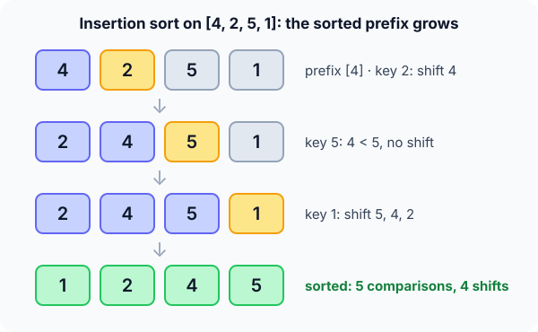

Prerequisites
- Arrays and zero-based indexing.
- A
whileloop with two conditions joined by&&. - Big-O notation (see Complexity analysis), and ideally Bubble sort.
The analogy
Everyday analogy
Think of sorting a hand of cards. You pick up one card at a time and slide it left until it sits next to a smaller card.
Insertion sort does exactly this. The cards in your hand are the sorted prefix, and each new number is "inserted" into it. After $n-1$ insertions, the whole hand is sorted.
How it works
Start with one insertion by hand
Take [4, 2, 5, 1]. The prefix [4] is already sorted. At each step, guess first, then open "Check".
Example: predict before you read
Step 1. The key is 2. Predict: does 4 shift right?
Check
Yes, 4 > 2, so 4 shifts and 2 drops into the gap: [2, 4, 5, 1].
Step 2. Cover the next line and guess: the key is 5. How many numbers shift?
Check
None. 4 < 5, so 5 stays where it is: [2, 4, 5, 1]. One comparison, done.
Step 3. The key is 1. Predict: where does it land, and how many shifts?
Check
5, 4 and 2 all shift right, and 1 lands at the front: [1, 2, 4, 5]. Three shifts.

Quick recall: Before reading further, cover the text above and say out loud: after step 2, which part of the array is sorted, and is it in its final place?
Check your answer
[2, 4, 5] is sorted among itself, but not final: the 1 still has to be inserted in front of all of them.
Count the work
Add up what happened on [4, 2, 5, 1].
- Comparisons. Predict the total.
Check
1 + 1 + 3 = 5 comparisons.
- Shifts. Now count the pairs that are in the wrong order: (4,2), (4,1), (2,1), (5,1). Predict: how does that number compare with the shifts?
Check
Both are 4. Every shift fixes exactly one out-of-order pair.
Quick recall: Without scrolling up, say out loud: why did the key 5 cost only one comparison?
Check your answer
Its left neighbour, 4, was already smaller, so the while loop stopped immediately. Nothing was out of order with 5.
The rule in plain words
Take the next number as the key. While the number to its left is bigger, shift that number one slot right. Drop the key into the gap.
That is one insertion. The sorted prefix is now one longer. Repeat until the prefix is the whole array.
Quick recall: Before you read the code, write the three steps of one insertion in your own words. Then check below.
Check your answer
1. Save the next number as the key. 2. Shift every bigger number in the prefix one step right. 3. Put the key in the gap that opens up.
The code
Read this code after you have done one insertion by hand. It will make more sense.
void insertion_sort(int a[], int n) {
for (int i = 1; i < n; i++) {
int key = a[i]; /* save it before shifting */
int j = i - 1;
while (j >= 0 && a[j] > key) { /* strict > keeps it stable */
a[j + 1] = a[j]; /* shift right */
j--;
}
a[j + 1] = key; /* drop into the gap */
}
}Definition
What you just did, in one line: insertion sort keeps a sorted prefix a[0..i-1] and inserts a[i] into it by shifting bigger elements one slot right.
An inversion is a pair $i < j$ with $a_i > a_j$. Each shift removes exactly one.
flowchart TD
A["key = a[i], j = i - 1"] --> B{"j >= 0 and a[j] > key ?"}
B -->|yes| C["Shift: a[j+1] = a[j], j = j - 1"]
C --> B
B -->|no| D["Insert: a[j+1] = key"]
D --> E{"More elements?"}
E -->|yes| A
E -->|no| F["Done: the array is sorted"]
[2, 4, 5, 1], how many times do you go round the "Shift" loop? (Answer: three times, then j becomes −1 and you insert at the front.)How fast is it?
Quick recall: Before looking at the formula, predict: on a reversed array of $n$ elements, how far does the last key travel?
Check your answer
All the way to the front: it is smaller than all $n-1$ numbers before it, so it makes $n-1$ comparisons and shifts.
On reversed input, key $i$ shifts past all $i$ numbers before it. Adding them up gives the worst case:
$$1 + 2 + \dots + (n-1) \;=\; \frac{n(n-1)}{2} \;=\; O(n^2).$$In general the cost is $\Theta(n + I)$, where $I$ is the number of inversions. Sorted input has $I = 0$, so it takes $O(n)$.
| Best | Average | Worst | Extra space | Stable | In-place |
|---|---|---|---|---|---|
| $O(n)$ | $O(n^2)$ | $O(n^2)$ | $O(1)$ | Yes | Yes |
Warning
The order of the two tests matters. Write j >= 0 && a[j] > key, not the other way round. Otherwise you read a[-1] when the key belongs at the front.
Exam tip
After $k$ steps, the first $k+1$ elements are sorted among themselves, but not necessarily in their final places. That is the difference from selection sort, whose prefix is final.
Common mistakes
- Shifting before saving
a[i]intokey, which overwrites the number you are inserting. - Testing
a[j] > keybeforej >= 0, which reads past the start of the array. - Using
>=instead of>, which moves equal items past each other and breaks stability.
Try it yourself
Exercise 1 (warm-up)
Sort [3, 1, 2] by hand. How many comparisons and how many shifts does insertion sort make?
Hint
Count the inversions first: that's your number of shifts.
Answer
3 comparisons and 2 shifts. Key 1 shifts 3 (1 comparison). Key 2 shifts 3, then stops at 1 (2 comparisons).
Exercise 2 (a bit harder)
How many comparisons does insertion sort make on [1, 2, 3, 4, 5]? And on [5, 4, 3, 2, 1]? Write both answers down before you open them.
Show answer
Sorted: 4 comparisons, one per key, which is $n-1$. Reversed: 1 + 2 + 3 + 4 = 10 comparisons, which is $\frac{n(n-1)}{2}$.
Did you know?
Did you know?
Insertion sort runs inside the sort you use every day. Timsort, the algorithm behind Python's sorted() and Java's object sort, uses insertion sort to build small sorted runs before merging them.
That's why it's worth learning: on small or nearly sorted data it beats the "fast" sorts, because its inner loop is tiny.
Key points to remember
If you remember one thing from each line, remember the because.
- The prefix is always sorted, because each key is dropped exactly where it fits among the numbers already there.
- The worst case is $O(n^2)$ because on reversed input key $i$ shifts past all $i$ numbers before it, $\frac{n(n-1)}{2}$ in total.
- The best case is $O(n)$ because on sorted input every key stops after one comparison.
- Shifts equal inversions because each shift moves a bigger number past the key, fixing exactly one out-of-order pair.
- It is stable because the loop stops at an equal value, so the key never jumps over it.
- Extra space is $O(1)$ because only the key is stored outside the array.
Self-check questions
Answer these in order, out loud. They follow the page, so your answers become the script of your video.
- How is insertion sort like sorting a hand of cards?
Sample answer
You pick up one card at a time and slide it left past bigger cards until it fits. The cards in your hand stay sorted the whole time.
- Walk through [4, 2, 5, 1]. What happens when the key is 1?
Sample answer
The prefix is [2, 4, 5]. All three are bigger than 1, so they shift right and 1 lands at the front, giving [1, 2, 4, 5].
- Why does the code save
a[i]inkeybefore the loop?A good answer says what the first shift does to
a[i].Sample answer
The first shift writes
a[i-1]intoa[i], which would destroy the number we're inserting. Saving it first keeps it safe until we drop it in the gap. - So what is insertion sort, in one sentence?
Sample answer
It grows a sorted prefix by taking the next element and shifting bigger elements right until the element fits.
- Why is the running time tied to the number of inversions?
A good answer says what one shift fixes.
Sample answer
Each shift moves one bigger number past the key, fixing exactly one out-of-order pair. So the shifts equal the inversions, plus about one comparison per key.
- What is its time and space complexity?
Sample answer
$O(n)$ in the best case on sorted input, $O(n^2)$ on average and in the worst case on reversed input. Extra space is $O(1)$.
- After $k$ steps, how is insertion sort's prefix different from selection sort's?
Sample answer
Insertion sort's prefix is sorted but not final, since smaller numbers can still arrive. Selection sort's prefix holds the $k$ smallest values in their final places.
- Why do real libraries use insertion sort for small arrays instead of merge sort or quick sort?
Sample answer
On a few dozen items, its tiny loop and lack of recursion beat the overhead of the $O(n \log n)$ sorts. On nearly sorted data it's close to $O(n)$ anyway.
- If you had to teach this to a friend in 2 minutes, what would you leave out, and why?
Sample answer
I'd leave out the inversion count and the $\Theta(n + I)$ formula. I'd keep the card analogy, one insertion on a small array, and "$O(n^2)$ worst, $O(n)$ if nearly sorted, stable, in-place". The picture matters more than the proof.
External resources
- VisuAlgo: Sorting: pick "INS" and step through insertion sort on your own input.
- Toptal: Insertion sort animation: see how fast it is on nearly sorted data.
- GeeksforGeeks: Insertion sort: an article with code in several languages.
- Wikipedia: Insertion sort: analysis, variants and its use inside hybrid sorts.
Videos
- YouTube: insertion sort as a Romanian folk dance: the AlgoRythmics video, a fun way to see the shifts.
- YouTube search: insertion sort explained: pick a short walkthrough.